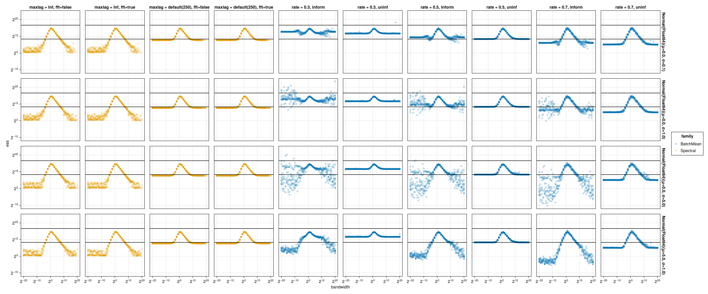

Benchmarking ESS estimators
Executive summary
If you are using Julia, install the packages FFTW and MCMCChains and use the following to compute ESS. Small changes in that chunk of code can lead to doom.
using MCMCChains
ess(samples; autocov_method = FFTAutocovMethod(), maxlag = typemax(Int))Alternatively, use InferenceReport which uses the above settings by default when generating reports.
Under the hood, the above uses Geyer’s truncated autocorrelation estimator (see Geyer 1992, sec. 3.3). However, the two arguments maxlag and autocov_method are both critical. Without the first, the estimator can severely overestimate ESS. Without the second, the method can become extremely slow. In other words, default values for MCMCChains’s argument are potentially dangerous.
In the following, we present some experiments supporting this. At the same time we compare to several types of alternative estimators based on batch means. We find that the specific variant of Geyer’s method described above outperforms all the types of batch mean methods. Our findings align with the results from a distinct set of experiments from Vehtari, Gelman, Simpson, Carpenter and Bürkner.
Numerical results
We replicate and expand a numerical experiment reported by Trevor Campbell (personal communication, January 2025). The basic setup is the following:
- The target distribution is \(\mathcal{N}(0, 1)\) in all experiment.
- We consider Metropolis-Hastings algorithms with normal proposals. We vary the proposal bandwidth (x-axis, log-scale).
- Facet rows: different initial distributions for the MCMC.
- Facet columns: different ESS estimators:
- Orange: those based on Geyer’s truncated autocorrelation estimator.
maxlag: eitherMCMCChains’s default (the hard-coded value of250), orInf(for both, the actual truncation is the minimum of that and the first lag where the sum of two consecutive lags gives a negative estimate).fft: whether the Fast Fourier Transform is used (only relevant for timing experiments).
- Blue: those based on batch mean methods.
inform: if the estimator is informed by known moments (used in the context of MCMC benchmarking), otherwise,uninf.rate: the rate \(\theta\) described in Section 3.
- Orange: those based on Geyer’s truncated autocorrelation estimator.
- For each initial distribution and proposal bandwidth, we ran 10 independent chains and estimate 10 ESS from each chain separately.
- Each chain contains the samples from 100,000 iteration.
- The top solid black line denotes an idealized effective sample size of 100,000, the bottom solid black line denotes the square root of that.
- The test function used here is \(g(x) = x^2\), so the reference distribution is a \(\chi^2\) with one degree of freedom. The values of \(\mu\) and \(\sigma\) are computed from that distribution.

As the bandwidth goes to zero or infinity, we expect the effective sample size to go to zero. This setup allows us to detect that many ESS estimators severely over-estimate ESS in the regime of low sampler efficiency.
Standard batch mean methods are limited by batch size
The standard batch mean method used in many packages corresponds to the column rate = 0.5, uninf. The rate of \(0.5\) simply means that \(\sqrt{n}\) batches each of size \(\sqrt{n}\) are used.
We see from the results in this column that once the autocorrelations of lag \(O(\sqrt{n})\) are significant, the method breaks down. The break down point corresponds to the case where the method starts to output an ESS estimate of \(O(\sqrt{n})\) (bottom vertical line). As a side result, packages based on batch mean should output at the very minimum a warning message in such cases.
One work-around is to change the batch size, in particular a rate \(\theta\) greater than \(0.5\): less batches \(a_n = n^{1-\theta}\), each of larger size \(b_n = n^\theta\). This corresponds to the column rate = 0.7, uninf, but we see that this only pushes the problem to a different threshold. Moreover as \(\theta\) increases, the estimates get more noisy because much less batches are available.
Informed batch mean methods are sensitive to initialization
We describe in the appendix an alternative to ESS that exploits the fact that in some MCMC benchmarking contexts, we may know the true moments of the target. These correspond to the columns with inform. However, we see that this is only effective for initial distributions far enough from the stationary distribution in this example. Moreover, these methods are by design less general since they required known moments.
Default arguments for Geyer’s method are problematic
We now turn to the truncated autocorrelation estimator of Geyer. We start with the default arguments in MCMCChains, i.e., with ess(samples). Under the hood, this uses a hard coded maximum lag of 250. This is the columns with maxlag = default. We see a similar pattern as uninformed batch mean, where the estimator silently breaks down after a threshold and severely over-estimates ESS.
Removing the max lag address the over-estimation issue
A simple tweak, removing the max lag argument completely solves the issue. This corresponds to the columns with maxlag = Inf.
Why is this maximum lag used then? It turns out to be a computational issue, described next.
Computational issue of naive maxlag
The default algorithm used in MCMCChains does not leverage the fast Fourier transform (presumably, to keep dependencies light). As a result, the timings without FFT reflect the worst-case compute complexity of \(O(n^2)\). As expected, the computational issues arise in slow mixing chains (see columns with fft = false).
Thankfully, the problem is solved by the FFT \(O(n \log n)\) running time: see columns with fft = true.
Appendix: background on informed batch ESS estimators
Consider a setup where we are benchmarking an MCMC method. To do so, we often pick a test function with known mean \(\mu\) and variance \(\sigma^2\) under the target distribution \(\pi\). Here we review the construction of an informed ESS estimator based on these known parameters.
Markov chain CLT: Fix a Markov Kernel and a test function satisfying a central limit theorem for Markov chains, which motivates approximations of the form: \[\sqrt{k} (\hat I_k - \mu) \approx \mathcal{N}(0, \sigma^2_a),\] where \(\hat I_k = \frac{1}{k} \sum_{i=1}^k g(X_i)\) and \(\mu = \mathbb{E}[g(X)]\) for \(X \sim \pi\), and \(\sigma^2_a\) is the asymptotic variance, a constant that depends on \(g\), \(\pi\) and the mixing of the Markov chain.
Now from the CLT for Markov chains it follows that if we have a Monte Carlo average \(I_k\) based on a MCMC chain of length \(k\), then \[k \text{Var}(\hat I_k) \approx \sigma_a^2. \tag{1}\]
Independent MCMC chains: Suppose first we had \(a_n\) independent copies of MCMC (we will relax this shortly), each of length \(b_n\). Let \(\hat I^{(1)}, \dots, \hat I^{(a_n)}\) denote \(a_n\) independent estimators, the first one based on the first copy, second on second copy, etc. Since the \(I^{(i)}\) are independent and identically distributed, \[\text{Var}(I^{(1)}) \approx \frac{1}{a_n} \sum_{i = 1}^{a_n} (I^{(i)} - \mu)^2. \tag{2}\]
Combining Equation 1 and Equation 2, we obtain: \[\frac{b_n}{a_n} \sum_{i = 1}^{a_n} (I^{(i)} - \mu)^2 \approx \sigma_a^2.\]
Batch mean trick: view a trace of length \(n\) as \(a_n\) subsequent batches of length \(b_n\). A popular choice is \(a_n = b_n = \sqrt{n}\).
Effective sample size: recall the effective sample size (ESS) is defined as \(\operatorname{ESS}= n (\sigma^2 / \sigma_a^2)\). This is the quantity we seek to estimate.
Applying the batch mean trick with \(a_n = b_n = \sqrt{n}\), we obtain:
\[\operatorname{ESS}= n \frac{\sigma^2}{\sigma_a^2} \approx n \left(\frac{1}{\sigma^2} \frac{b_n}{a_n} \sum_{i = 1}^{a_n} (I^{(i)} - \mu)^2 \right)^{-1} = \sqrt{n} \left( \frac{1}{\sqrt{n}} \sum_{i = 1}^{\sqrt{n}} \left(\frac{I^{(i)} - \mu}{\sigma}\right)^2\right)^{-1}. \tag{3}\]
The right hand side of this equation is the informed ESS estimator.
We can also generalize this to the size of the batch given by \(b_n = n^\theta\) for some parameter \(\theta \in ((1+\delta/2)^{-1}, 1)\) where we assume \(4+\delta\) moments for the test function of interest (see Jones et al. 2006, Remark 6). For example, with \(\theta = 1/3\), assume 8 moments; for \(\theta = 1/2\), 6 moments. This yields: \[\operatorname{ESS}\approx a_n \left( \frac{1}{a_n} \sum_{i = 1}^{a_n} \left(\frac{I^{(i)} - \mu}{\sigma}\right)^2 \right)^{-1}.\]